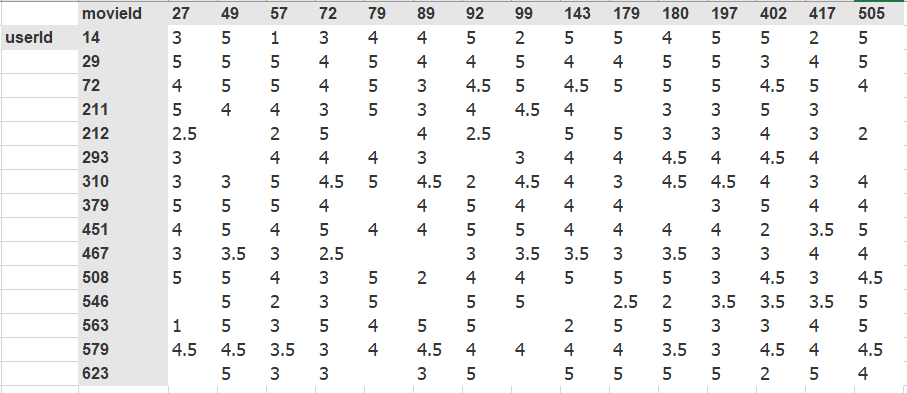

from fastai.collab import *
from fastai.tabular.all import *
set_seed(42)
Collaborative filtering - How recommendation systems work
Have you ever wondered how websites make recommendation sytems for you. Think about youtube, netflix, amazon or just how facebook and linkedin recommend for you friends in the add friend lists. At times companies have just user ids, product ids and maybe a rating showing how the product satisfied the user. With such a problem at hand, there is a solution to this which has been used by a variety of companies around the globe and its non other than collaborative filtering. > The way collaborative filtering works is that it looks at what the current user has used or liked, then then find other users that have liked similar products, and then recommend the current user other products that these users have liked or used.
In this tutorial we are going to build one from scratch and thereafter I shall show you how to do the same very fast with a framework using these ways: 1. Dot product multiplication from scratch 1. Use collablearner framework 1. Use Deeplearning
As usual let’s install the librabries…
The datset we shall use is movielens a 25 million recommendation dataset and is available for free. It has a combination of userid, movieid rating and time-stamp variables. Although I tried using the whole dataset for this tutorial, It was taking long and made me impatient, so decided to use a different version of the data with just 100k rows. You can consider using the whole dataset if you like
path = untar_data(URLs.ML_100k)Jupyter notebooks provide you with the ability to write both terminal and python code. Let’s check what we’ve dowloaded.
!ls {path}README u.data u.item u1.base u2.test u4.base u5.test ub.base
allbut.pl u.genre u.occupation u1.test u3.base u4.test ua.base ub.test
mku.sh u.info u.user u2.base u3.test u5.base ua.testWhen you read through the readme file, it tells us that the data is stored in u.data and it is tab separated ordered by user, movie, rating. However the columns are not labelled. We can use pandas to sort everything out.
ratings = pd.read_csv(path/'u.data', delimiter='\t', header=None,
names=['user','movie','rating','timestamp'])
ratings.head()| user | movie | rating | timestamp | |
|---|---|---|---|---|
| 0 | 196 | 242 | 3 | 881250949 |
| 1 | 186 | 302 | 3 | 891717742 |
| 2 | 22 | 377 | 1 | 878887116 |
| 3 | 244 | 51 | 2 | 880606923 |
| 4 | 166 | 346 | 1 | 886397596 |
ratings.shape(100000, 4)The shape shows that we have 100,000 rows and 4 columns. The above dataframe shows all the data that we need, however it’s not in a friendly view. Here is a cross-tabulated excel version depicting details in a more friendly way.

The data represents ratings that users have given to movies. The blank gaps imply that the user hasn’t given a rating yet, most probably we assume they haven’t watched it. In ourcase, the blank gaps are the values we want to predict.
Latent factors
The idea behind collaborative filtering is latent factors. Latent factors make it possible for a model to tell what product you may like and these kinds of factors can be learned based on what other users like. > jargon: Latent factors are factors that are important for the prediction of the recommendations, but are not explicitly given to the model and instead learned.
Learning the factors
Step 1: Randomly initialize some parameters. The left matrix represents the embedding matrix for the the userid whereas the upper matrix is for the movieid and all these parameters are randomly initialised. For both cases, blue represents the biases. For ourcase each id (wether movieid or userid) the number of latent factors are the same. (for our case each id has 5 factors and the extra 6th (bias)). > jargon: Embedding matrix is what we multiply and embedding with, and in this case collaborative filtering problem is learned through training.
Step 2: Calculate the predictions. Just think of a simple math problem \(y=mx+c\) where we have two changing parameters m and c where c is the bias term. Our bias works in the same way. We use dot product to multiply user factors and movies factors the add both the biases. This is how we obtain the values in white space. > jargon: Dot product is when you multiply the corresponding elements of two vectors and add them up
Step 3: The next step is to calculate the loss. We can use any loss function as long as it can be optimized. Remember at each step we compare the predicted value and then compare it with the actual value then used use stochastic gradient descent to make the parameters as better as possible. In this tutorial we use mean squared error since it works pretty fine. Other loss functions like mean absolute error can work perfect as well
Creating DataLoaders
Remember when we listed what was in our path, there were many things including the moivie names in u.item, I think it is better if we use this than using the ids. This makes our dataframe more human friendly. We can use pandas again to do this.
movies = pd.read_csv(path/'u.item', delimiter='|', encoding='latin-1',
usecols=(0,1), names=('movie','title'), header=None)
movies.head()| movie | title | |
|---|---|---|
| 0 | 1 | Toy Story (1995) |
| 1 | 2 | GoldenEye (1995) |
| 2 | 3 | Four Rooms (1995) |
| 3 | 4 | Get Shorty (1995) |
| 4 | 5 | Copycat (1995) |
We can then use merge to combine our movies dataframe with the ratings
ratings = ratings.merge(movies)ratings.shape(100000, 5)And wow, our dataframe looks nice, We can then build a DataLoaders object from this table. By default, it takes the first column for the user, the second column for the item (here our movies), and the third column for the ratings. We need to change the value of item_name in our case to use the title instead of the IDs:
dls = CollabDataLoaders.from_df(ratings, item_name='title', bs=64)
dls.show_batch()| user | title | rating | |
|---|---|---|---|
| 0 | 542 | My Left Foot (1989) | 4 |
| 1 | 422 | Event Horizon (1997) | 3 |
| 2 | 311 | African Queen, The (1951) | 4 |
| 3 | 595 | Face/Off (1997) | 4 |
| 4 | 617 | Evil Dead II (1987) | 1 |
| 5 | 158 | Jurassic Park (1993) | 5 |
| 6 | 836 | Chasing Amy (1997) | 3 |
| 7 | 474 | Emma (1996) | 3 |
| 8 | 466 | Jackie Chan's First Strike (1996) | 3 |
| 9 | 554 | Scream (1996) | 3 |
To represent collaborative filtering in PyTorch we can’t just use the crosstab representation directly, especially if we want it to fit into our deep learning framework. We can represent our movie and user latent factor tables as simple matrices:
n_users = len(dls.classes['user'])
n_movies = len(dls.classes['title'])
n_factors = 5
user_factors = torch.randn(n_users, n_factors)
movie_factors = torch.randn(n_movies, n_factors)We can check the shape to ensure everything is running perfect
user_factors.shape, movie_factors.shape(torch.Size([944, 5]), torch.Size([1665, 5]))To calculate the result for a particular movie and user combination, we have to look up the index of the movie in our movie latent factor matrix and the index of the user in our user latent factor matrix; then we can do our dot product between the two latent factor vectors. But look up in an index is not an operation our deep learning models know how to do. They know how to do matrix products, and activation functions.
Fortunately, it turns out that we can represent look up in an index as a matrix product. The trick is to replace our indices with one-hot-encoded vectors.
Collaborative Filtering from Scratch
PyTorch already provides a Module class, which provides some basic foundations that we want to build on. We just add the name of this superclass after the name of the class that we are defining.
The final thing that you need to know to create a new PyTorch module is that when your module is called, PyTorch will call a method in your class called forward, and will pass along to that any parameters that are included in the call. Here is the class defining our dot product model:
If you haven’t seen object-oriented programming before, it can be a little bit intimidating but then don’t worry, its a few lines of code and can be easy to read when you do it line by line. But dont hesitate to google some tutorial and have a sense how object oriented programming works.
class DotProductBias(Module):
def __init__(self, n_users, n_movies, n_factors, y_range=(0,5.5)):
self.user_factors = Embedding(n_users, n_factors)
self.user_bias = Embedding(n_users, 1)
self.movie_factors = Embedding(n_movies, n_factors)
self.movie_bias = Embedding(n_movies, 1)
self.y_range = y_range
def forward(self, x):
users = self.user_factors(x[:,0])
movies = self.movie_factors(x[:,1])
res = (users * movies).sum(dim=1, keepdim=True)
res += self.user_bias(x[:,0]) + self.movie_bias(x[:,1])
return sigmoid_range(res, *self.y_range)We now have our architecture ready, Let’s train and see how everything goes
model = DotProductBias(n_users, n_movies, 50)
learn = Learner(dls, model, loss_func=MSELossFlat())
learn.fit_one_cycle(5, 5e-3, wd=0.1)| epoch | train_loss | valid_loss | time |
|---|---|---|---|
| 0 | 0.958848 | 0.956008 | 00:10 |
| 1 | 0.872096 | 0.876626 | 00:10 |
| 2 | 0.747695 | 0.839320 | 00:10 |
| 3 | 0.600863 | 0.822649 | 00:10 |
| 4 | 0.487104 | 0.822984 | 00:10 |
And wow, this looks fine with just 5 epochs. You can try iterating more and changing the learning rate to see wether you can make this better. The wd stands for weight decay but most deeplearning practioners call it L2 regularization. So it’s better to understand such jargon since thats what most reseach papers use.
Actually we used pytorch’s embedding previously to initialize our parameters, we can decide not to do that and build our own. Let’s do that. We begin by creating a function that takes size as an argument and then returns a tensor if randomly initialized parameters.
def create_params(size):
return nn.Parameter(torch.zeros(*size).normal_(0, 0.01))We can then pass in the function instead of pytorch’s embedding.
class DotProductBias(Module):
def __init__(self, n_users, n_movies, n_factors, y_range=(0,5.5)):
self.user_factors = create_params([n_users, n_factors])
self.user_bias = create_params([n_users])
self.movie_factors = create_params([n_movies, n_factors])
self.movie_bias = create_params([n_movies])
self.y_range = y_range
def forward(self, x):
users = self.user_factors[x[:,0]]
movies = self.movie_factors[x[:,1]]
res = (users*movies).sum(dim=1)
res += self.user_bias[x[:,0]] + self.movie_bias[x[:,1]]
return sigmoid_range(res, *self.y_range)Let’s train again.
model = DotProductBias(n_users, n_movies, 50)
learn = Learner(dls, model, loss_func=MSELossFlat())
learn.fit_one_cycle(5, 5e-3, wd=0.1)| epoch | train_loss | valid_loss | time |
|---|---|---|---|
| 0 | 0.944513 | 0.958574 | 00:11 |
| 1 | 0.847001 | 0.873356 | 00:10 |
| 2 | 0.736139 | 0.838051 | 00:11 |
| 3 | 0.584478 | 0.821091 | 00:11 |
| 4 | 0.484529 | 0.821726 | 00:10 |
And wow, it even looks a little bit better than using pytorch’s embedding. This shows you the power of doing things from scratch.
Interpreting Embeddings and Biases
To be an expert deep learning practioner, you need to be able to interprete models, there are some insights you can’t get from the data till you first run the models. Forexample let’s try interpreting the bias. We are using argsort to sort the values in ascending order and return the first five indices of those values. When we index them onto the title class, we get their names and print them.
movie_bias = learn.model.movie_bias.squeeze()
idxs = movie_bias.argsort()[:5]
[dls.classes['title'][i] for i in idxs]['Children of the Corn: The Gathering (1996)',
'Lawnmower Man 2: Beyond Cyberspace (1996)',
'Robocop 3 (1993)',
'Home Alone 3 (1997)',
'Mortal Kombat: Annihilation (1997)']The interpretation for this is that let’s say Robocop in this list is an action movie (I am not sure of it being an action movie). People that like movies may not like it as well. This implys that this particular movie won’t be recommended to users.
We can do the same for those movies with a high bias by passing True to descending. This prints for us movies that are liked. Forexample say Titanic, a user might like it even if he or she doesn’t like romantic movies. So such a movie will be highly recommended for users to watch.
idxs = movie_bias.argsort(descending=True)[:5]
[dls.classes['title'][i] for i in idxs]['L.A. Confidential (1997)',
'Shawshank Redemption, The (1994)',
"Schindler's List (1993)",
'Titanic (1997)',
'Silence of the Lambs, The (1991)']We can also do an interpretation on the embeddings, we have 50 factors and representing them on a 2D graph isnot possible. We can use PCA to just reduce the factors two just two dimensions. Surprisingly similars will tend to be clustered near each other, this is something that we didnt program. We didnt even do any feature engineering but the model does this for us. And as I said, these are insights you cannot get from the data untill you run the models.
g = ratings.groupby('title')['rating'].count()
top_movies = g.sort_values(ascending=False).index.values[:1000]
top_idxs = tensor([learn.dls.classes['title'].o2i[m] for m in top_movies])
movie_w = learn.model.movie_factors[top_idxs].cpu().detach()
movie_pca = movie_w.pca(3)
fac0,fac1,fac2 = movie_pca.t()
idxs = list(range(50))
X = fac0[idxs]
Y = fac2[idxs]
plt.figure(figsize=(12,12))
plt.scatter(X, Y)
for i, x, y in zip(top_movies[idxs], X, Y):
plt.text(x,y,i, color=np.random.rand(3)*0.7, fontsize=11)
plt.show()All this that we’ve written from from scratch can be done using a fastai’s framwork collab_learner. Let’s try it and see whether we get similar results.
Using fastai Collab-Learner
learn = collab_learner(dls, n_factors=50, y_range=(0, 5.5))
learn.fit_one_cycle(5, 5e-3, wd=0.1)| epoch | train_loss | valid_loss | time |
|---|---|---|---|
| 0 | 0.962636 | 0.950697 | 00:10 |
| 1 | 0.851842 | 0.885249 | 00:12 |
| 2 | 0.757142 | 0.839390 | 00:11 |
| 3 | 0.572357 | 0.825587 | 00:11 |
| 4 | 0.490504 | 0.826604 | 00:11 |
We can also look into our model,
learn.modelEmbeddingDotBias(
(u_weight): Embedding(944, 50)
(i_weight): Embedding(1665, 50)
(u_bias): Embedding(944, 1)
(i_bias): Embedding(1665, 1)
)And surprisingly, when we check the movie with maximum bias weights. We get the same as our model built from scratch.
movie_bias = learn.model.i_bias.weight.squeeze()
idxs = movie_bias.argsort(descending=True)[:5]
[dls.classes['title'][i] for i in idxs]['L.A. Confidential (1997)',
'Silence of the Lambs, The (1991)',
'Titanic (1997)',
'Shawshank Redemption, The (1994)',
'Star Wars (1977)']These days the cool kids are using deep-learning. Let’s try it out and see how it works as well.
Deep learning
Firstai has a function get_emb_sz that recommends for as sizes to use for the factors, however you can use different sizes other than this.
embs = get_emb_sz(dls)
embs[(944, 74), (1665, 102)]And like other deep learning frameworks, we need a sequential layer That has both linear and ReLU activations that we pass in our data. In the forward function, we are concatenating the embeddngs for both the users and the movies and this is actually what we pass to the sequential layer. Then pytorch will calculate gradients for us and stochastic gradient descent as well.
class CollabNN(Module):
def __init__(self, user_sz, item_sz, y_range=(0,5.5), n_act=100):
self.user_factors = Embedding(*user_sz)
self.item_factors = Embedding(*item_sz)
self.layers = nn.Sequential(
nn.Linear(user_sz[1]+item_sz[1], n_act),
nn.ReLU(),
nn.Linear(n_act, 1))
self.y_range = y_range
def forward(self, x):
embs = self.user_factors(x[:,0]),self.item_factors(x[:,1])
x = self.layers(torch.cat(embs, dim=1))
return sigmoid_range(x, *self.y_range)We can train as usual.
model = CollabNN(*embs)learn = Learner(dls, model, loss_func=MSELossFlat())
learn.fit_one_cycle(5, 5e-3, wd=0.01)| epoch | train_loss | valid_loss | time |
|---|---|---|---|
| 0 | 0.921936 | 0.952098 | 00:12 |
| 1 | 0.868925 | 0.927091 | 00:10 |
| 2 | 0.885512 | 0.885665 | 00:11 |
| 3 | 0.850595 | 0.873478 | 00:11 |
| 4 | 0.761019 | 0.877106 | 00:11 |
Surprisingly all our previous models beat the deep learning approach. This shows us why deep-learning shouldn’t always be the first priority. At-times simpler models can work just perfect.
Thank you, Hope this tutorial will be helpful.